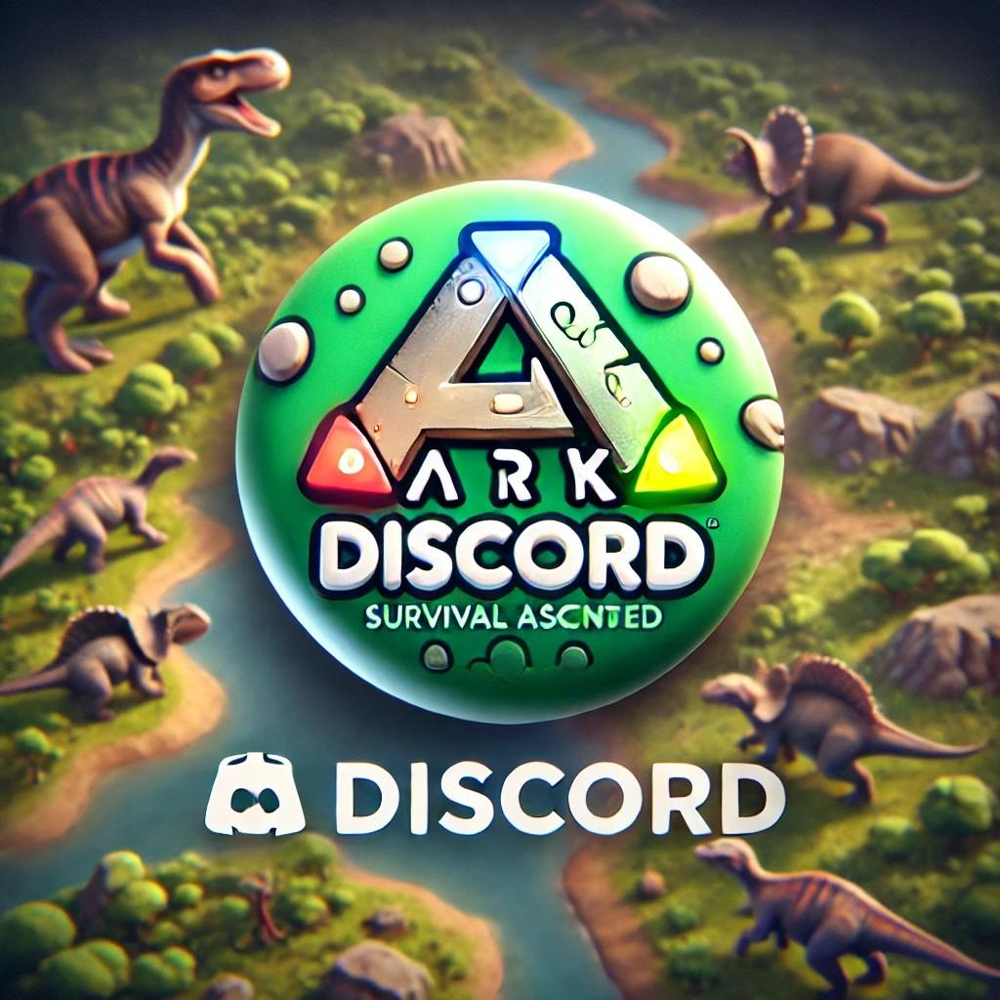

Jsme skupina hráčů, co miluje nejen Ark: Survival Ascended, ale i spoustu dalších her. Baví nás stavět, bojovat a hlavně hrát společně. Přidej se k nám a staň se součástí naší komunity!

ARK: Survival Ascended je remasterovaná verze původní hry ARK: Survival Evolved z roku 2015, nyní postavená na moderním enginu Unreal Engine 5.
Hráči se ocitají na záhadném ostrově plném dinosaurů a prehistorických tvorů, které mohou ochočit a využít k přežití.
Pravidelné aktualizace přinášejí nový obsah a rozšiřují herní možnosti.